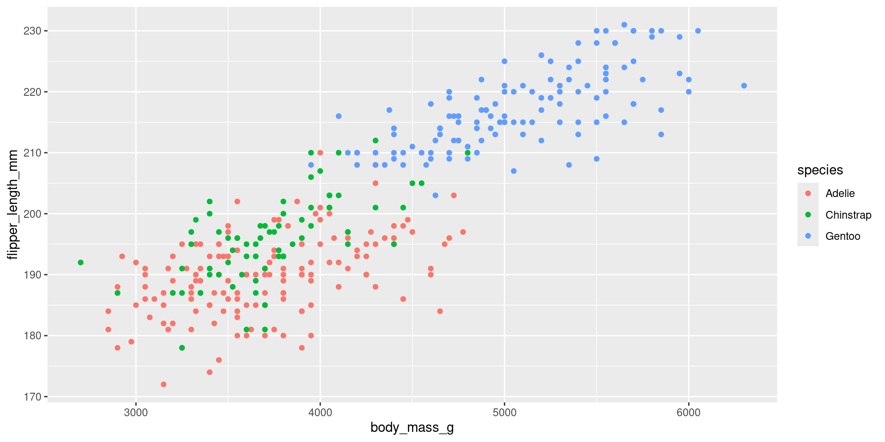

library(palmerpenguins)
library(tidyverse)
penguins |> ggplot(aes(body_mass_g, flipper_length_mm, color = species)) +
geom_point()
Logistic Regression
Logistic Regression
Multinomial Regression
The practice of classifying data points into different categories.
\[ \left(\begin{array}{c} Gentoo \\ Other \end{array}\right) = \boldsymbol X^\mathrm T \boldsymbol \beta \]
Logistic Regression is used to model the association between a set of predictors and a binary outcome.
\[ \left(\begin{array}{c} Gentoo \\ Other \end{array}\right) = \boldsymbol X^\mathrm T \boldsymbol \beta \]
\[ Y = \left\{\begin{array}{cc} 1 & Gentoo \\ 0 & Other \end{array}\right. \]
\[ P\left(Y = 1\right) = \boldsymbol X^\mathrm T \boldsymbol \beta \]
\[ P\left(Y = 1\right) = \frac{\exp(\boldsymbol X^\mathrm T \boldsymbol \beta)}{1 + \exp(\boldsymbol X^\mathrm T \boldsymbol \beta)} \]
\[ \frac{P(Y = 1)}{1-P(Y = 1)} = \exp(\boldsymbol X^\mathrm T \boldsymbol \beta) \]
\[ \log\left\{\frac{P(Y = 1)}{1-P(Y = 1)}\right\} = \boldsymbol X^\mathrm T \boldsymbol \beta \]
\[ \frac{P(Y = 1)}{1-P(Y = 1)} \]
\[ \log\left\{\frac{P(Y = 1)}{1-P(Y = 1)}\right\} \]
Estimation is done by finding the values of \(\boldsymbol \beta\) that maximizes the likelihood function given the data pair \((\boldsymbol X_i, Y_i)\)
\[ L(\boldsymbol \beta) = \prod_{i=1}^n P(Y_i=1)^{Y_i}\left\{1-P(Y_i=1)\right\}^{1-Y_i} \]
Once the estimates \(\hat \beta\) are obtained, compute:
\[ P\left(Y_i = 1\right) = \frac{\exp(\boldsymbol X_i^\mathrm T \boldsymbol{\hat\beta})}{1 + \exp(\boldsymbol X^\mathrm T \boldsymbol{\hat\beta)}} \]
\[ Y_i = \left\{\begin{array}{cc} 1 & P(Y_i =1) \geq 0.5 \\ 0 & Otherwise \end{array}\right. \]
Ordinal regression extends the logistic regression to more than one category (\(J\) Categories) that has a natural order.
An example can be thought of as Grade Levels: A, B, C, D, F
We can model Ordinal responses using the the proportional odds model and a logit formula:
\[ \mathrm{logit}\{P(Y\leq j|X)\} = \boldsymbol X_{(j)} ^\mathrm T \boldsymbol \beta _{(j)} \]
\[ \boldsymbol X_{(j)}^\mathrm T \boldsymbol \beta_{(j)} = \beta_{0(j)} + \sum^p_{i=1}X_{i}\beta_i \]
\[ \log\left\{\frac{P(Y = k)}{P(Y = \mathrm{REF})}\right\} = \boldsymbol X^\mathrm T \boldsymbol \beta_k \]
\(\mathrm{REF}\) is a reference value to be modeled.
penguins <- penguins |> mutate(gentoo = ifelse(gentoo == "Gentoo", 1, 0))
res <- penguins |> glm(gentoo ~ flipper_length_mm + body_mass_g,
data = _,
family = binomial())
summary(res)#>
#> Call:
#> glm(formula = gentoo ~ flipper_length_mm + body_mass_g, family = binomial(),
#> data = penguins)
#>
#> Coefficients:
#> Estimate Std. Error z value Pr(>|z|)
#> (Intercept) -1.316e+02 3.094e+01 -4.254 2.10e-05 ***
#> flipper_length_mm 5.447e-01 1.384e-01 3.935 8.32e-05 ***
#> body_mass_g 4.312e-03 1.648e-03 2.616 0.00889 **
#> ---
#> Signif. codes: 0 '***' 0.001 '**' 0.01 '*' 0.05 '.' 0.1 ' ' 1
#>
#> (Dispersion parameter for binomial family taken to be 1)
#>
#> Null deviance: 434.15 on 332 degrees of freedom
#> Residual deviance: 38.75 on 330 degrees of freedom
#> AIC: 44.75
#>
#> Number of Fisher Scoring iterations: 10#>
#> Call:
#> vglm(formula = poverty ~ religion + degree + country + age +
#> gender, family = propodds(), data = WVS)
#>
#> Coefficients:
#> Estimate Std. Error z value Pr(>|z|)
#> (Intercept):1 -0.729769 0.104044 -7.014 2.32e-12 ***
#> (Intercept):2 -2.532483 0.110154 -22.990 < 2e-16 ***
#> religionyes 0.179733 0.076565 2.347 0.018902 *
#> degreeyes 0.140918 0.066714 2.112 0.034663 *
#> countryNorway -0.322353 0.075444 -4.273 1.93e-05 ***
#> countrySweden -0.603300 0.080895 -7.458 8.79e-14 ***
#> countryUSA 0.617773 0.068391 9.033 < 2e-16 ***
#> age 0.011141 0.001557 7.157 8.24e-13 ***
#> gendermale 0.176370 0.052877 3.335 0.000851 ***
#> ---
#> Signif. codes: 0 '***' 0.001 '**' 0.01 '*' 0.05 '.' 0.1 ' ' 1
#>
#> Names of linear predictors: logitlink(P[Y>=2]), logitlink(P[Y>=3])
#>
#> Residual deviance: 10402.59 on 10753 degrees of freedom
#>
#> Log-likelihood: -5201.296 on 10753 degrees of freedom
#>
#> Number of Fisher scoring iterations: 5
#>
#> No Hauck-Donner effect found in any of the estimates
#>
#>
#> Exponentiated coefficients:
#> religionyes degreeyes countryNorway countrySweden countryUSA
#> 1.1968983 1.1513306 0.7244422 0.5470035 1.8547931
#> age gendermale
#> 1.0112033 1.1928793#>
#> Call:
#> vglm(formula = species ~ body_mass_g + flipper_length_mm, family = multinomial(),
#> data = penguins)
#>
#> Coefficients:
#> Estimate Std. Error z value Pr(>|z|)
#> (Intercept):1 149.242738 31.696208 4.709 2.50e-06 ***
#> (Intercept):2 119.978676 31.301127 3.833 0.000127 ***
#> body_mass_g:1 -0.003430 0.001669 -2.055 0.039874 *
#> body_mass_g:2 -0.004692 0.001649 NA NA
#> flipper_length_mm:1 -0.654416 0.143847 -4.549 5.38e-06 ***
#> flipper_length_mm:2 -0.482421 0.141237 -3.416 0.000636 ***
#> ---
#> Signif. codes: 0 '***' 0.001 '**' 0.01 '*' 0.05 '.' 0.1 ' ' 1
#>
#> Names of linear predictors: log(mu[,1]/mu[,3]), log(mu[,2]/mu[,3])
#>
#> Residual deviance: 266.6108 on 660 degrees of freedom
#>
#> Log-likelihood: -133.3054 on 660 degrees of freedom
#>
#> Number of Fisher scoring iterations: 10
#>
#> Warning: Hauck-Donner effect detected in the following estimate(s):
#> '(Intercept):1', 'body_mass_g:2', 'flipper_length_mm:2'
#>
#>
#> Reference group is level 3 of the response